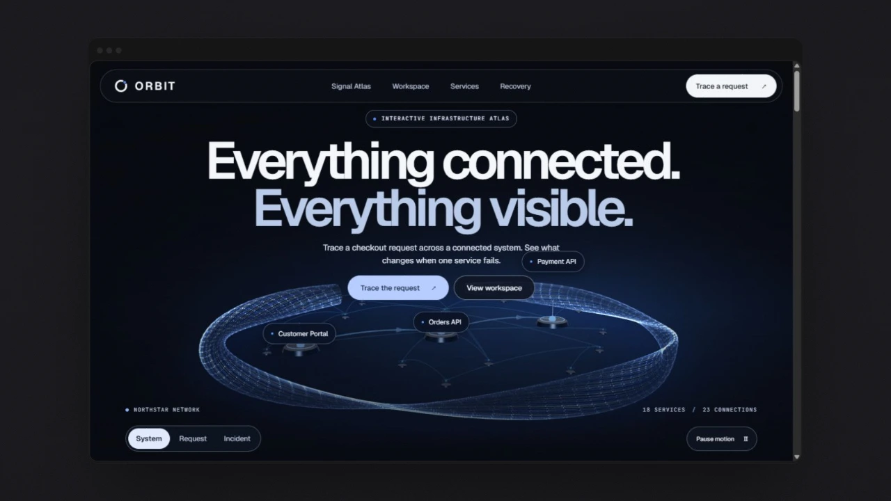
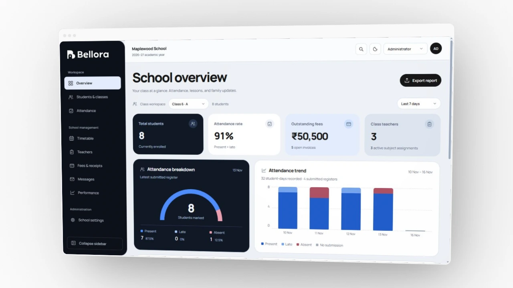
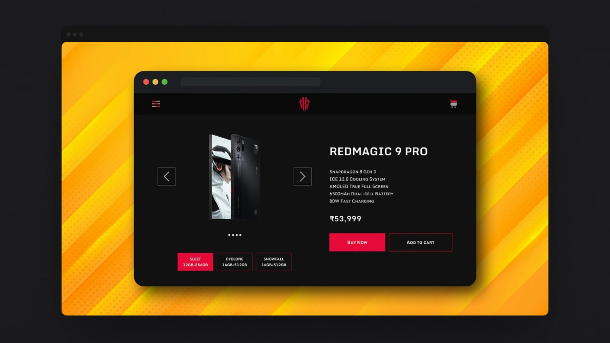
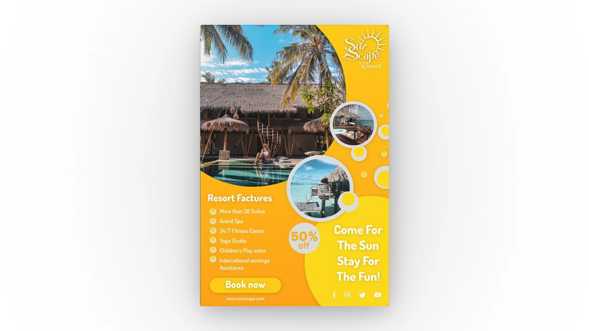

Selected work.
Projects that make complex ideas easier to explore, understand, and use.
Browse all projects
V+
How do discovery and playback become one continuous experience?
Cinematic discovery, mouse-friendly playback and saved progress, demonstrated with a working, openly licensed film catalogue.
All projects
Showing 5 of 8 projects

ORBIT
A 3D scrollytelling website that traces a checkout request and shows how a payment slowdown affects connected services.

Bellora
A class-centered school workspace linking attendance, timetables, teacher allocation, fees, family updates, and student performance.
V+
Cinematic discovery, mouse-friendly playback and saved progress, demonstrated with a working, openly licensed film catalogue.

Cloudy
A game streaming and cloud gaming app that helps people discover streamers, keep up with their schedules and find a community around the games they play.

Play Anime
A website for watching anime in high quality, built to surface what is top ranked, what is popular and what is releasing next.

REDMAGIC 9 Pro
An interactive product page prototype for the REDMAGIC 9 Pro gaming phone, letting shoppers browse the phone, compare variants and buy.

Social Media Posters
Concept social media posts for Nothing Phone (2), Apple Vision Pro, the ROG Carnyx microphone and an Xbox controller.

Sunscape Resorts
A promotional poster for a tropical resort that sells the stay, the facilities and a limited offer in a single glance.